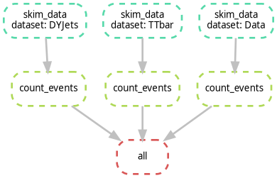
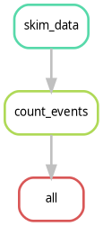

Content from The Why: Analysis Reproducibility
Last updated on 2026-02-08 | Edit this page
Estimated time: 10 minutes
Overview
Questions
- Why do we need workflow orchestration in CMS?
- What are the three pillars of a reusable analysis?
- Who is the primary beneficiary of a reproducible workflow?
Objectives
- Identify the “Knowledge Gap” in traditional HEP analyses.
- Understand the three-step approach to capturing an analysis.
- Recognize that reproducibility is a labor-saving tool for the analyst, not just a bureaucratic requirement.
The “Bus Factor” in CMS Analysis
In a typical CMS analysis, we move through Data Exploration, Background Modeling, Systematics, and Statistical Fits. Usually, this is handled by a series of disconnected scripts and manual steps.
The problem arises when an analyst moves on or a “Future You” returns to the code six months later:
- The Environment: What version of CMSSW or Coffea was used?
- The Logic: Why was this specific histogram used as input for that fit?
- The Commands: What were the exact arguments passed to the script?
Without a workflow manager, this knowledge is lost, leading to “Scientific Archeology” where we try to dig up our own results.
The Three Pillars of Reusability
To solve this, we think of an analysis in three layers of “Capturing”:
- Capture Code & Environment: Use Git for code and Containers (Docker/Apptainer) or Pixi/Conda for the software. This ensures the “Kitchen” is always the same.
- Capture Commands: Move away from manual terminal commands. Use a script or a rule that explicitly states how to run the code.
- Capture Workflow: This is the “Glue.” We define the relationship between steps. This is where Snakemake comes in.
Why should you care?
You might think: “Reproducibility is for the collaboration, but I’m just trying to graduate.”
Actually, the first person to benefit from a reproducible workflow is you.
- The “Re-discovery” Phase: During the CMS review process (ARC), you will inevitably be asked to change a systematic or re-run a plot with new data. A Snakemake workflow allows you to do this by changing one line and typing one command.
- Automation: Instead of waiting for Step A to finish so you can manually start Step B, you can launch the whole chain and go get coffee.
Who is the most frequent user of your analysis code?
Future You. Six months from now, when you have to re-run your plots for a conference or a paper revision, you will thank “Past You” for writing a Snakefile instead of a 20-page README.
- Modern CMS analysis is too complex to be managed by memory or manual scripts.
- Reproducibility is a productivity tool: it makes your own work easier to revise and update.
- Capturing the Workflow (the “Glue”) is the final step in ensuring an analysis is truly reusable.
Content from Introduction to Snakemake
Last updated on 2026-02-17 | Edit this page
Estimated time: 20 minutes
Overview
Questions
- What is a Snakefile?
- How do I define a single processing step?
- How do I execute a rule?
Objectives
- Create a
Snakefile. - Write a valid Snakemake rule with
input,output, andshell. - Execute a specific target file.
Why Snakemake for CMS?
In CMS analysis, we rarely run a single script. We create an analysis chain: Skimming \(\rightarrow\) Processing \(\rightarrow\) Plotting \(\rightarrow\) Fitting. Traditionally, we managed this with “Mega-Bash” scripts or by manually submitting JDL files to HTCondor/Slurm.
Key Advantages
- Portability: Works on your laptop, LXPLUS, or the LPC with the same code.
- Environment Management: Seamless integration with Containers (Apptainer/Singularity) and Conda.
- Visualization: It automatically generates a “map” (Directed Acyclic Graph or DAG) of your analysis.
Snakemake vs. LAW (Luigi Analysis Workflow): A bias comparison
- Boilerplate: LAW is based on Luigi and requires significant Python boilerplate for every task. Snakemake uses a “Domain Specific Language” (DSL) that is much closer to plain English or a configuration file.
- The Learning Curve: Snakemake is widely used in Genomics and Data Science. If you search for a problem on StackOverflow, you’ll find an answer in seconds. LAW is more niche to the HEP community.
- Automation: Snakemake is file-based. It looks at the “last modified” timestamp of your files. If you change your plotting script, it won’t re-run the 5-hour skimming step unless you ask it to.
- Workflow Isolation: All your code can run independently of Snakemake. You can think of Snakemake as a “workflow manager” that orchestrates your existing scripts (like a bash script on steroids). LAW requires you to write your tasks as Luigi Tasks, which can be more cumbersome.
Credits and Documentation
Snakemake is an open-source project created by Johannes Köster (University of Duisburg-Essen) in 2012. While this tutorial focuses on CMS-specific use cases, the official documentation is comprehensive and covers thousands of features.
- Documentation: https://snakemake.github.io
- Citation: If you use Snakemake in your analysis, proper citation is expected in our field:
Köster, Johannes and Rahmann, Sven. “Snakemake—a scalable bioinformatics workflow engine”. Bioinformatics, 2012.
The Essentials
To run a workflow, you need two things:
-
The Snakefile: A file named
Snakefile(capital S, no extension) where you define your rules. It uses a Python-based syntax, so you can write standard Python code inside it alongside your rules. -
The Execution Command: You run the workflow from
the terminal by invoking
snakemake.
The basic command structure is:
-
--cores <N>: Tells Snakemake how many CPU cores to use. (e.g.,--cores 1for sequential execution,--cores 4for parallel). -
<target_file>: The file you want to generate. Snakemake will figure out the steps to get there. - If you dont specify a snakefile, Snakemake will look for a file
named
Snakefilein the current directory. You can specify a different file with-s <filename>.
The Anatomy of a Rule
The building block of Snakemake is the rule. Think of it as a recipe. To make a dish, you need ingredients (inputs), a kitchen (the environment), and a set of instructions (the shell command).
PYTHON
rule skim_data:
input:
"raw_data.txt"
output:
"skimmed_data.txt"
shell:
"grep 'Signal' {input} > {output}"Important Properties:
- Rule Name: Must be unique.
- Input/Output: These are strings (or lists of strings). Snakemake uses these to “connect the dots” between rules.
-
Shell: The bash command to execute. Notice the
{input}and{output}placeholders—Snakemake automatically fills these in with the paths you defined above.
Understanding the Syntax
A Snakefile is essentially a Python script with some
extra keywords added. This is powerful because it means you can use
Python variables, functions, and libraries directly in your workflow
definition.
-
Indentation matters: Just like in Python, Snakemake
uses indentation (usually 4 spaces) to group code blocks. The
input,output, andshelldirectives must be indented relative to therule. -
Strings: File paths and commands are strings, so
they must be enclosed in quotes (
"..."or'...'). -
Comments: Use
#for comments, just like in Python/Bash. - Lists: If a rule has multiple inputs or outputs, you can list them with commas:
Running the Rule
- Create dummy data:
Create a
Snakefilewith the content shown above.Run Snakemake. We must tell it what file we want to generate:
BASH
pixi run snakemake --cores 1 skimmed_data.txt
# if you run snakemake from a conda environment or pip, use:
# snakemake --cores 1 skimmed_data.txtIf successful, you will see Finished jobid: 0.
OUTPUT
Assuming unrestricted shared filesystem usage.
host: gluon
Building DAG of jobs...
Using shell: /usr/bin/bash
Provided cores: 1 (use --cores to define parallelism)
Rules claiming more threads will be scaled down.
Job stats:
job count
--------- -------
skim_data 1
total 1
Select jobs to execute...
Execute 1 jobs...
[Sun Feb 8 12:05:08 2026]
localrule skim_data:
input: raw_data.txt
output: skimmed_data.txt
jobid: 0
reason: Missing output files: skimmed_data.txt
resources: tmpdir=/tmp
[Sun Feb 8 12:05:08 2026]
Finished jobid: 0 (Rule: skim_data)
1 of 1 steps (100%) doneSyntax Error Hunt
Intentionally break your indentation (remove a space before
input:). Run the command again.
What error does Snakemake give you?
This IndentationError is the most common error you will
encounter.
- A
Snakefiledefines the workflow. - A
rulecontainsinput,output, and ashellcommand. - You execute the workflow by asking for the output file, not the rule name.
Content from Chaining Rules (The DAG)
Last updated on 2026-02-17 | Edit this page
Estimated time: 30 minutes
Overview
Questions
- How does Snakemake connect different rules?
- What is a DAG?
- How does Snakemake know what to re-run?
Objectives
- Connect two rules by matching input/output filenames.
- Use the
rule allconvention. - Observe “Lazy Execution” in action.
Thinking Backwards
The most difficult paradigm shift when learning Snakemake is that you stop writing Imperative instructions (Step A, then Step B) and start writing Declarative goals.
In a Bash script, you say: > “Run the skimmer. Then run the plotter.”
In Snakemake, you say: > “I want the plot. To get the plot, I need the skimmed file. To get the skimmed file, I need the raw data.”
Snakemake determines the dependencies automatically by matching
filenames. If Rule A outputs file.txt and Rule B takes
file.txt as input, Snakemake knows Rule A must run first.
This chain of dependencies is called a DAG (Directed
Acyclic Graph).
Activity: Extending the Analysis
We have a rule that skims data. Now we want to count the events in that skimmed file.
Add this second rule to your Snakefile
(below the first one):
PYTHON
rule count_events:
input:
"skimmed_data.txt"
output:
"counts.txt"
shell:
"wc -l {input} > {output}"Crucial Link: Notice that the input of
count_events matches the output of
skim_data. This is how Snakemake builds the
Directed Acyclic Graph (DAG).
Running the Chain
Ask for the final result:
Snakemake realizes:
- You want
counts.txt. -
count_eventscan produce it, but it needsskimmed_data.txt. -
skim_datacan produceskimmed_data.txt. Plan: Runskim_data-> Runcount_events.
The rule all Convention
By default, Snakemake runs the first rule it sees if
you don’t specify a file. To avoid typing counts.txt every
time, we add a “dummy” rule at the very top.
Add this to the top of your Snakefile:
Now you can simply run:
Lazy Execution (The “Why”)
- Run
pixi run snakemake --cores 1again.
What happens?
OUTPUT
Assuming unrestricted shared filesystem usage.
host: xxxx
Building DAG of jobs...
Nothing to be done (all requested files are present and up to date).- Modify the original raw data:
For MacOS users: some students have reported that touch does not remove the timestamp. In this case, you can remove the file and re-create it, or try to change the content.
- Run Snakemake again.
What happens?
When you first run the command, Snakemake checks if
counts.txt exists. Since it doesn’t, it calculates the
steps needed to create it. The second time you run the command,
Snakemake sees that counts.txt exists and is newer than its
inputs, so it does nothing.
When you “touch” raw_data.txt, you update its
modification time. Snakemake notices that an input
(raw_data.txt) is now strictly newer than the downstream
files (skimmed_data.txt and counts.txt). It
marks them as “stale” and re-runs the chain.
This is the crucial benefit for large analyses. If you had a workflow with 500 rules and you only modified the input for rule 499, Snakemake would not re-run rules 1 through 498. It selectively re-executes only the parts of the DAG that are affected by your change. In CMS terms: if you change a plotting style, you don’t have to re-run the N-tuplizer.
- Declarative Workflows: Unlike bash scripts where you define the order of steps, in Snakemake you define the dependencies (inputs/outputs), and Snakemake figures out the order (DAG).
-
The
allRule: It is convention to include a rule namedallat the top of the workflow to define the final targets of your analysis. - Lazy Execution: Snakemake only re-runs a rule if the output file is missing or if the input files have changed (have a newer timestamp) since the last run.
Content from Scaling with Wildcards
Last updated on 2026-02-08 | Edit this page
Estimated time: 30 minutes
Overview
Questions
- How can I use one rule to process multiple different samples?
- What is a wildcard and how does Snakemake “fill” it?
- How do I tell Snakemake to generate a list of all my target files?
Objectives
- Replace hardcoded filenames with
{wildcards}. - Use the
expand()function to generate lists of outputs. - Understand how Snakemake “pattern matches” files on disk.
Scaling Up: From One File to Many
In CMS, we never have just one “raw_data.txt”. We have
DYJets, TTbar, WJets, and various
Data eras. Writing a rule for each one would be a
nightmare.
Snakemake handles this using Wildcards.
The Wildcard Syntax
A wildcard is a placeholder in curly braces {}. For
example, instead of writing a rule that only processes
TTbar.txt, we can write a generic rule that works for any
sample:
PYTHON
rule skim_data:
input:
"raw/{sample}.txt"
output:
"skimmed/{sample}.txt"
shell:
"grep 'Signal' {input} > {output}"How does it work?
When you ask for skimmed/TTbar.txt, Snakemake looks at
the rule and sees it can create skimmed/{sample}.txt. It
“pattern matches” and determines that {sample} must be
TTbar. It then looks for the input
TTbar.txt.
Crucial Rule: Snakemake works backwards. It looks at the output you requested, matches it to the output pattern of a rule, determines the wildcard value, and then fills in that value for the input.
The expand() function
If you have 100 samples, you don’t want to type them all in your
rule all. Snakemake provides a helper function called
expand() to generate lists of files.
The expand() function takes a pattern and replaces the
placeholders with the values in your list. The code above produces:
["skimmed/DYJets.txt", "skimmed/TTbar.txt", "skimmed/WJets.txt"]
Wildcards vs. Expand Variables
Notice a subtle difference:
- In
rule skim_data, we used{sample}. This is a Wildcard (Snakemake figures it out based on the filename). - In
rule all, we used{s}insideexpand(). This is a Python string formatting variable.
They do not need to match! expand() happens before the
rules run to generate the list of target files. The rules run after to
figure out how to create those files.
Activity: Processing Multiple Datasets
-
Parallelism: This is the best moment to explain why
the
--coresflag matters. In HEP, we are used to sending 100 jobs to Condor. Here, we show they can run 4 (or 8, or 16) jobs in parallel locally on their laptop with zero extra effort. -
The “Pattern Matching” Warning: Students often try
to put wildcards in the
inputthat aren’t in theoutput. I would emphasize that Snakemake works backwards: it sees a file it wants (the output) and then tries to figure out what the input should be.
Let’s modify our Snakefile to handle three different
simulated datasets.
- Open your
Snakefileand modify it as follows:
PYTHON
# 1. Define our datasets
DATASETS = ["DYJets", "TTbar", "Data"]
rule all:
input:
expand("results/{d}_counts.txt", d=DATASETS)
# 2. Updated Skim rule with wildcards
rule skim_data:
input:
"raw/{dataset}.txt"
output:
"skimmed/{dataset}.txt"
shell:
"grep 'Signal' {input} > {output} || true"
# 3. Updated Count rule with wildcards
rule count_events:
input:
"skimmed/{dataset}.txt"
output:
"results/{dataset}_counts.txt"
shell:
"wc -l {input} > {output}"- Prepare the “raw” directory and files:
BASH
mkdir -p raw
echo -e "Signal\nBackground" > raw/DYJets.txt
echo -e "Signal\nSignal\nBackground" > raw/TTbar.txt
echo -e "Background\nBackground" > raw/Data.txt- Run the workflow. Note that we use –cores 4 to allow Snakemake to run independent jobs in parallel:
Exercise: Adding a new sample
Add a new dataset called WJets to your
DATASETS list.
- Create the dummy file
raw/WJets.txtwith some “Signal” lines. - Run Snakemake again.
Observe how Snakemake only runs the rules for the new
WJets sample and skips the ones that were already finished
(DYJets, TTbar, Data).
- Wildcards: Use name in filenames to define a generic rule.
- Constraints: Snakemake fills wildcards by looking at the output you requested and propagating that value to the input.
-
expand(): A Python function that generates a list
of filenames from a pattern. It is commonly used in
rule allto define the final targets. -
Parallelism: With wildcards, Snakemake can run
multiple independent jobs in parallel using the
--coresflag.
Content from Visualizing the Workflow
Last updated on 2026-02-17 | Edit this page
Estimated time: 20 minutes
Overview
Questions
- How can I see the dependencies between my rules?
- What is a Directed Acyclic Graph (DAG)?
- How do I preview what Snakemake intends to do?
Objectives
- Use the
--dagflag to generate a visualization of the analysis. - Understand the difference between the Rule Graph and the File Graph.
- Use dry-runs (
-n) to verify the execution plan.
Seeing the Big Picture
As your analysis grows from 2 rules to 20, and from 3 samples to 300, it becomes impossible to keep the entire workflow in your head. Snakemake provides built-in tools to “draw” your analysis for you.
The Directed Acyclic Graph (DAG)
Snakemake represents your workflow as a DAG:
- Directed: There is a clear flow from raw data to final plots.
- Acyclic: There are no loops (you can’t have a file that depends on its own output).
- Graph: A mathematical structure of nodes (rules/files) and edges (dependencies).
Generating the DAG
To create a visualization, we tell Snakemake to generate the DAG in a
format called dot, and then we use the
graphviz tool (which we installed via pixi in
the setup) to turn it into an image.
BASH
pixi run snakemake --dag | dot -Tpng > dag.png
# pixi run snakemake --dag | dot -Tpdf > dag.pdf ### For PDF formatHow to read the DAG:
- Nodes (Boxes): Represent the jobs that need to be run.
- Arrows: Represent the flow of data.
- Solid vs. Dashed lines: In many viewers, a dashed border indicates that the file already exists and the job doesn’t need to run.
Activity: Visualizing our Scaled Workflow
Ensure you have the Snakefile from the previous episode (with
DYJets,TTbar,Data, andWJets).Run the DAG command:
It has been reported that the command above may not work due to
differences in how dot is handled. If you encounter issues,
try the following command instead:
or you can run:
- Open
dag.png, it should look like the following image. Notice how the branches for each dataset are parallel.

Exercise: Identifying the Bottleneck
Look at your DAG. If you were to run this on a machine with only 1 core, how many steps would it take? If you had 4 cores, how would the timing change?
With 1 core, Snakemake runs every job sequentially. With 4 cores,
Snakemake can run all four skim_data jobs simultaneously,
significantly reducing the “Wall Clock” time of your analysis. This is
the power of a DAG-based system!
Rule Graph vs. File Graph
If you have 1,000 samples, the --dag command will
produce a giant PDF with 1,000 boxes, which is unreadable. To see a
simplified version that only shows how the rules connect (ignoring the
individual samples), use:
This is often much more useful for complex CMS analyses to ensure the logic is correct.

The Dry-Run: “Look Before You Leap”
Before you submit 1,000 jobs to a cluster, you should always perform a Dry-Run. This tells Snakemake to calculate the DAG and print the execution plan without actually running any commands.
If you want more detail (like seeing the actual shell commands that will be executed), use:
If you run this commands on top of finished workflow, you should see something like:
OUTPUT
Building DAG of jobs...
Nothing to be done (all requested files are present and up to date).This is expected, because all the output files already exist. If you change something in your Snakefile (like adding a new rule or changing an existing one), the dry-run will show you which jobs need to be re-run.
Alternatively, if you want to see the dry-run or the commands to execute, use:
- DAG: A visual map of your analysis dependencies.
- Dry-run (-n): Always perform a dry-run to verify the plan before executing.
- Rule Graph: A simplified visualization showing the relationship between rules rather than individual files.
Content from Containerized Execution
Last updated on 2026-02-16 | Edit this page
Estimated time: 30 minutes
Overview
Questions
- How do I run specific steps of my analysis in a controlled environment?
- How can I use CMSSW or specific Python versions without installing them locally?
- How does Snakemake handle Apptainer/Singularity?
Objectives
- Use the
container:directive to link a rule to a Docker/Apptainer image. - Execute a workflow where different rules use different environments.
- Understand the
--use-apptainer(or--use-singularity) flag.
Containers: Your Analysis in a Box
In CMS, we often need very specific environments: a certain version
of CMSSW, a specific ROOT version for combine, or a set of
Python libraries like coffea. Instead of spending hours
fighting with export PATH or cmsenv, we can
use Containers.
Snakemake makes this seamless. You can tell a specific rule to run inside a container, and Snakemake will automatically pull the image and wrap your command inside it.
-
The “LPC/LXPLUS” connection: This is where you
should mention that on most HEP clusters,
singularityorapptaineris already installed. This makes their local tutorial 100% transferable to the big machines. - Binding directories: Students often ask how the container sees their files. It’s worth a small note that Snakemake automatically “binds” the project directory so the container sees the code and data.
The container: Directive
To use a container, you simply add the container:
keyword to your rule.
PYTHON
rule plot_data:
input:
"results/{dataset}_counts.txt"
output:
"plots/{dataset}.png"
container:
"docker://python:3.10-slim"
shell:
"python scripts/my_plotter.py {input} {output}"What happens behind the scenes?
When you run Snakemake with the --use-apptainer
flag:
- Snakemake sees the
container:directive. - It pulls the image (if not already present) using
Apptainer/Singularity. Note: Apptainer can run
docker://images perfectly fine. - It starts the container and automatically mounts (binds) your current working directory inside it.
- It executes the
shellcommand inside that container.
Why is this better than a local environment?
- Portability: You can run the exact same container on your laptop, the LPC, or the Grid.
-
Isolation: Rule A can use
python:2.7while Rule B usespython:3.11. No more version conflicts! -
No Installation: You don’t need to install
ROOTorCMSSWon your machine; you just need to point to the image.
A Note on Apptainer Installation
While we are using Pixi to manage Snakemake and our local Python tools, Pixi does not typically install Apptainer/Singularity itself. This is because Apptainer requires specific system-level permissions to manage containers safely.
-
On your laptop: You must have Apptainer installed
at the system level (e.g., via
brewon macOS with a virtual machine, or your Linux distribution’s package manager). - On CMS Clusters (LPC/LXPLUS): Apptainer is already pre-installed by the administrators.
Before proceeding, verify you have it by running:
apptainer --version.
Activity: Running a “Physics” Script in a Container
Let’s simulate a plotting step that requires a specific Python environment.
- Create a simple plotting script named
plotter.py:
PYTHON
import sys
# Simulate a plotting library requirement
print(f"Generating plot from {sys.argv[1]} using Python {sys.version}")
with open(sys.argv[2], "w") as f:
f.write("IMAGE_DATA")- Modify your
Snakefileto include a containerized plotting rule:
PYTHON
DATASETS = ["DYJets", "TTbar", "Data"]
rule all:
input:
expand("plots/{d}.png", d=DATASETS)
# (Keep your previous skim_data and count_events rules here)
rule plot_results:
input:
"results/{dataset}_counts.txt"
output:
"plots/{dataset}.png"
container:
"docker://python:3.10-slim"
shell:
"python plotter.py {input} {output}"- Run the workflow using Apptainer:
Please note that the previous exercise will create empty “plots”
since the plotter.py is just a placeholder. The point is to
see the container in action, not to generate real plots!
Did it work? Depending on where you run it, this
answer may vary. If you are running on
lxplus/cmslpc, you might get an error about
bindings or permissions. This is the next topic we’ll cover.
Accessing External Data (Bind Mounts)
By default, Snakemake only lets the container see files inside your current project folder.
The CMS Problem: In HEP, our data typically lives on
storage areas like /eos or /cernbox, and our
software might live on /cvmfs. If you try to access a file
in /eos/user/... from inside the container, it will fail
because the container is isolated.
The Solution: You can pass arguments to Apptainer
using the --apptainer-args flag in Snakemake:
BASH
pixi run snakemake --cores 1 --use-apptainer --apptainer-args "--bind /eos:/eos --bind /cvmfs:/cvmfs" ### --bind /uscms_data/d3/user/ if you are at the LPCThis tells Apptainer: “Poke a hole in the container so I can see
/eos and /cvmfs from the outside.”
Exercise: Different Containers for Different Tasks
Imagine your skim_data rule requires an old C++ library
only available in a cmssw image, but your
plot_results rule needs a modern coffea
environment.
Can you assign different
container:directives to different rules in the sameSnakefile?Try changing the container: in
plot_resultstodocker://alpine:latestand run it. What happens?
Yes! Snakemake is designed for this. It will start the correct container for each specific job. If you switch to alpine:latest, the job will fail because alpine does not have python installed by default—this proves the command is truly running inside the isolated container!
- container:: A rule-level directive that specifies the Docker/Apptainer image to use.
- –use-apptainer: The command-line flag required to enable container execution.
- *–apptainer-args: Use this to bind external storage
paths (like
/eosor/cvmfs) so the container can see them. - Environment Agnostic: You can mix and match different containers in a single workflow, ensuring each step has the exact dependencies it needs.
Content from Bonus: The CMSDAS Challenge
Last updated on 2026-02-17 | Edit this page
Estimated time: 60 minutes
Overview
Questions
- How do I integrate existing CMS analysis repositories into Snakemake?
- How do I handle scripts that produce non-deterministic outputs (timestamps)?
- How do I chain different software environments (Coffea \(\rightarrow\) Combine)?
Objectives
- Clone and configure the \(t\bar{t}\gamma\) analysis repository.
- Write a rule to parallelize the processing step.
- “Patch” the aggregation step to accept Snakemake inputs.
- Execute a final statistical fit using a dedicated
combinecontainer.
The Challenge: \(t\bar{t}\gamma\) Cross Section
In the previous episodes, we worked with toy scripts. Now, we will automate a real analysis: the CMSDAS \(t\bar{t}\gamma\) Long Exercise. For this tutorial, we are not interested about the physics details, but rather how to integrate an existing analysis workflow into Snakemake. If you want to know more about the physics, check the CMSDAS \(t\bar{t}\gamma\) Long Exercise repository.
This analysis has a typical structure:
-
Coffea Processor (
runFullDataset.py): Runs on NanoAODs and produces.coffeahistograms. -
Plotting/Conversion (
save_to_root.py): Aggregates histograms and saves them as.rootfiles for the fit. -
Statistics (
combine): Performs a likelihood fit to extract the cross-section.
Setting the Stage
First, we need the analysis code. We will clone the repository directly into our workflow directory.
BASH
# Clone the repository (using the facilitators2026 branch for this tutorial)
git clone -b facilitators2026 https://github.com/fnallpc/ttgamma_longexercise.gitNow, check the contents. Notice that we are using the
facilitators2026 branch (the solutions branch). You should see
runFullDataset.py and a ttgamma/
directory.
Notice that we are trying to give a “realistic” experience in this tutorial. The code is not designed for Snakemake, so we will have to make some adjustments and “patches” to make it work. This is a common scenario when integrating legacy code into modern workflows.
Step 1: The processing Rule
Open ttgamma_longexercise/runFullDataset.py and scroll
to the bottom. You will see lines that look like this:
PYTHON
timestamp = datetime.datetime.now().strftime("%Y%m%d_%H%M%S")
outfile = os.path.join(args.outdir, f"output_{args.mcGroup}_run{timestamp}.coffea")
util.save(output, outfile)The Problem: Snakemake relies on filenames to know
if a job finished. If the script adds a random timestamp (e.g.,
_run20260215...), Snakemake won’t know the file was
created, and the workflow will fail.
The Fix: Modify the code to remove the timestamp. Change those lines to:
PYTHON
# timestamp = datetime.datetime.now().strftime("%Y%m%d_%H%M%S")
# Remove the timestamp from the filename
outfile = os.path.join(args.outdir, f"output_{args.mcGroup}.coffea")
util.save(output, outfile)Now the output is predictable:
output_MCTTGamma.coffea.
We can write a clean Snakemake file with the following rules. We will
define a rule that runs runFullDataset.py for each group
(e.g., MCTTGamma, Data, etc.) and produces a
.coffea file for each.
PYTHON
# Define the groups (found in runFullDataset.py)
MC_GROUPS = ["MCTTGamma", "MCTTbar1l", "MCTTbar2l", "MCSingleTop", "MCZJets", "MCWJets", "MCOther"]
DATA_GROUPS = ["Data"]
ALL_GROUPS = MC_GROUPS + DATA_GROUPS
rule run_coffea:
input:
script = "ttgamma_longexercise/runFullDataset.py"
output:
"results/output_{group}.coffea"
container:
#docker://coffeateam/coffea-dask-almalinux9:2025.9.0-py3.10"
"/cvmfs/unpacked.cern.ch/registry.hub.docker.com/coffeateam/coffea-dask-almalinux9:2025.9.0-py3.10" #### it can be from cvmfs
shell:
# We run with the modified script which outputs deterministic filenames
"python {input.script} {wildcards.group} --outdir results --workers 1 --executor local --maxchunks 1"
#"python {input.script} {wildcards.group} --outdir results --executor lpcjq" ### if you want to run the full dataset, takes hours.Step 2: The Aggregation Patch
The second step of the analysis is to aggregate the
.coffea files and convert them to ROOT.
The original script ttgamma_longexercise/save_to_root.py
has a major issue for automation and we will modify it.
PYTHON
outputMC = accumulate(
[
util.load("results/output_MCOther.coffea"),
util.load("results/output_MCSingleTop.coffea"),
util.load("results/output_MCTTbar1l.coffea"),
util.load("results/output_MCTTbar2l.coffea"),
util.load("results/output_MCTTGamma.coffea"),
util.load("results/output_MCWJets.coffea"),
util.load("results/output_MCZJets.coffea"),
]
)
outputData = util.load("results/output_Data.coffea")The second step of the analysis is to aggregate the
.coffea files and convert them to ROOT. After you modify
the code to remove the timestamp, we can write a Snakemake rule that
depends on all the .coffea files and runs the aggregation
script.
PYTHON
rule make_root_files:
input:
# 1. We need ALL the group files to be finished
coffeas = expand("results/output_{group}.coffea", group=ALL_GROUPS),
# 2. The script we just created
script = "ttgamma_longexercise/save_to_root.py"
output:
# The file expected by the next step (Combine)
"RootFiles/M3_Output.root"
container:
# We use the same container as the processing step
#docker://coffeateam/coffea-dask-almalinux9:2025.9.0-py3.10"
"/cvmfs/unpacked.cern.ch/registry.hub.docker.com/coffeateam/coffea-dask-almalinux9:2025.9.0-py3.10" #### it can be from cvmfs
shell:
# Pass the output filename first, then all input files
"python {input.script} {output} {input.coffeas}"Step 3: The Fit (Hybrid Environments)
Now that we have ROOT files, we need to run combine.
This requires a completely different environment (CMSSW-based).
While we usually use the container: directive, complex
HEP software like CMSSW often requires sourcing environment scripts
(/cvmfs/.../cmsset_default.sh) that don’t play nicely with
the automatic entrypoints of some containers.
In these cases, it is safer to invoke apptainer explicitly inside the shell command.
PYTHON
rule run_combine:
input:
root_file = "RootFiles/M3_Output.root",
# We use the data card from the repo
card = "ttgamma_longexercise/Fitting/data_card.txt",
#container = "docker://gitlab-registry.cern.ch/cms-cloud/combine-standalone:latest"
container = '/cvmfs/unpacked.cern.ch/gitlab-registry.cern.ch/cms-analysis/general/combine-container:latest'
output:
"fitDiagnosticsTest.root"
shell:
"""
APPTAINER_SHELL=$(which bash) apptainer exec -B .:/home/cmsusr/analysis \
-B /cvmfs --pwd /home/cmsusr/analysis/ \
{input.container} \
/bin/bash -c "export LANG=C && export LC_ALL=C && \
source /cvmfs/cms.cern.ch/cmsset_default.sh && \
cd /home/cmsusr/CMSSW_14_1_0_pre4/ && \
cmsenv && \
cd - && \
text2workspace.py {input.card} -m 125 -o workspace.root && \
combine -M FitDiagnostics workspace.root --saveShapes --saveWithUncertainties"
"""The Grand Finale
Now, define your target in rule all.
Run it!
What just happened?
- Snakemake saw you wanted the Fit.
- It checked
make_root_files, which needed the.coffeafiles. - It launched 8 parallel jobs to process
Data,TTGamma,TTbar, etc., using the Coffea container. - Once all 8 finished, it ran the aggregation script.
- Finally, it switched to the Combine container and performed the fit.
You have just orchestrated a full CMS analysis involving Data, MC, Systematics, and Statistics with one command.
Comparing Snakefile with a Bash Script
Let’s compare this with how you would do it in a bash script.
PYTHON
# Define the groups (found in runFullDataset.py)
MC_GROUPS = ["MCTTGamma", "MCTTbar1l", "MCTTbar2l", "MCSingleTop", "MCZJets", "MCWJets", "MCOther"]
DATA_GROUPS = ["Data"]
ALL_GROUPS = MC_GROUPS + DATA_GROUPS
rule all:
input:
#expand("results/output_{group}.coffea", group=ALL_GROUPS),
#"RootFiles/M3_Output.root",
"fitDiagnosticsTest.root"
rule run_coffea:
input:
script = "ttgamma_longexercise/runFullDataset.py"
output:
"results/output_{group}.coffea"
container:
#docker://coffeateam/coffea-dask-almalinux9:2025.9.0-py3.10"
"/cvmfs/unpacked.cern.ch/registry.hub.docker.com/coffeateam/coffea-dask-almalinux9:2025.9.0-py3.10" #### it can be from cvmfs
shell:
# We run with the modified script which outputs deterministic filenames
"python {input.script} {wildcards.group} --outdir results --workers 1 --executor local --maxchunks 1"
#"python {input.script} {wildcards.group} --outdir results --executor lpcjq"
rule make_root_files:
input:
# 1. We need ALL the group files to be finished
coffeas = expand("results/output_{group}.coffea", group=ALL_GROUPS),
# 2. The script we just created
script = "ttgamma_longexercise/save_to_root.py"
output:
# The file expected by the next step (Combine)
"RootFiles/M3_Output.root"
container:
# We use the same container as the processing step
#docker://coffeateam/coffea-dask-almalinux9:2025.9.0-py3.10"
"/cvmfs/unpacked.cern.ch/registry.hub.docker.com/coffeateam/coffea-dask-almalinux9:2025.9.0-py3.10" #### it can be from cvmfs
shell:
# Pass the output filename first, then all input files
"python {input.script} {output} {input.coffeas}"
rule run_combine:
input:
root_file = "RootFiles/M3_Output.root",
# We use the data card from the repo
card = "ttgamma_longexercise/Fitting/data_card.txt",
#container = "docker://gitlab-registry.cern.ch/cms-cloud/combine-standalone:latest"
container = '/cvmfs/unpacked.cern.ch/gitlab-registry.cern.ch/cms-analysis/general/combine-container:latest'
output:
"fitDiagnosticsTest.root"
shell:
"""
#export APPTAINER_CACHEDIR="/tmp/$(whoami)/apptainer_cache"
#export APPTAINER_TMPDIR="/tmp/.apptainer/"
APPTAINER_SHELL=$(which bash) apptainer exec -B .:/home/cmsusr/analysis \
-B /cvmfs --pwd /home/cmsusr/analysis/ \
{input.container} \
/bin/bash -c "export LANG=C && export LC_ALL=C && \
source /cvmfs/cms.cern.ch/cmsset_default.sh && \
cd /home/cmsusr/CMSSW_14_1_0_pre4/ && \
cmsenv && \
cd - && \
text2workspace.py {input.card} -m 125 -o workspace.root && \
combine -M FitDiagnostics workspace.root --saveShapes --saveWithUncertainties"
"""BASH
#!/bin/bash
# ==============================================================================
# CONFIGURATION
# ==============================================================================
# Define the groups (mimicking the lists in your python script)
MC_GROUPS=("MCTTGamma" "MCTTbar1l" "MCTTbar2l" "MCSingleTop" "MCZJets" "MCWJets" "MCOther")
DATA_GROUPS=("Data")
ALL_GROUPS=("${MC_GROUPS[@]}" "${DATA_GROUPS[@]}")
# Define Container Paths
COFFEA_CONTAINER="/cvmfs/unpacked.cern.ch/registry.hub.docker.com/coffeateam/coffea-dask-almalinux9:2025.9.0-py3.10"
COMBINE_CONTAINER="/cvmfs/unpacked.cern.ch/gitlab-registry.cern.ch/cms-analysis/general/combine-container:latest"
# Fail on first error
set -e
# ==============================================================================
# STEP 1: PROCESSING (Coffea)
# ==============================================================================
echo "--- Step 1: Running Coffea Processor ---"
mkdir -p results
# We have to manually loop over every sample
for group in "${ALL_GROUPS[@]}"; do
output_file="results/output_${group}.coffea"
# MANUAL CHECK: basic "target" logic (skip if exists)
if [ -f "$output_file" ]; then
echo "Skipping $group (Output exists)"
continue
fi
echo "Processing $group..."
# We have to manually invoke the container for EACH job
apptainer exec -B .:$PWD $COFFEA_CONTAINER \
python ttgamma_longexercise/runFullDataset.py \
"$group" --outdir results --workers 1 --executor local --maxchunks 1
# We still need the Rename/Move logic unless we patched the script
# (Assuming we are using the patched script for this comparison)
done
# ==============================================================================
# STEP 2: AGGREGATION (Coffea)
# ==============================================================================
echo "--- Step 2: Aggregating Histograms ---"
mkdir -p RootFiles
# We have to construct the list of input files manually
INPUT_LIST=""
for group in "${ALL_GROUPS[@]}"; do
INPUT_LIST="$INPUT_LIST results/output_${group}.coffea"
done
# Run the aggregation
# Note: We are using the patched/wrapper script we created
apptainer exec -B .:$PWD $COFFEA_CONTAINER \
python scripts/make_root_wrapper.py \
"RootFiles/M3_Output.root" $INPUT_LIST
# ==============================================================================
# STEP 3: STATISTICS (Combine)
# ==============================================================================
echo "--- Step 3: Running Fit ---"
# This requires the complex bind mounting and environment sourcing
APPTAINER_SHELL=$(which bash) apptainer exec -B .:/home/cmsusr/analysis \
-B /cvmfs --pwd /home/cmsusr/analysis/ \
$COMBINE_CONTAINER \
/bin/bash -c "export LANG=C && export LC_ALL=C && \
source /cvmfs/cms.cern.ch/cmsset_default.sh && \
cd /home/cmsusr/CMSSW_14_1_0_pre4/ && \
cmsenv && \
cd - && \
text2workspace.py ttgamma_longexercise/Fitting/data_card.txt -m 125 -o workspace.root && \
combine -M FitDiagnostics workspace.root --saveShapes --saveWithUncertainties"
echo "Analysis Complete!"Key Differences to Highlight
-
Parallelism:
- Bash: Runs sequentially (one loop after another). To make this
parallel, you’d need complex
&,wait, orGNUparallel commands. - Snakemake: Just add
--cores 4and it figures it out.
- Bash: Runs sequentially (one loop after another). To make this
parallel, you’d need complex
-
Resuming:
- Bash: Requires writing manual
if [ -f file ]; then ...blocks. If you change a script, Bash won’t know to re-run the step unless you delete the file manually. - Snakemake: Automatically detects if
runFullDataset.pyis newer than the output and re-runs only the necessary parts.
- Bash: Requires writing manual
-
Environment Switching:
- Bash: You have to manually wrap every command in
apptainer exec .... - Snakemake: You define the container: once per rule, and Snakemake handles the wrapping.
- Bash: You have to manually wrap every command in
- Integration: You can wrap almost any existing script in Snakemake, provided the Input/Output filenames are predictable.
- Determinism: If a script produces random timestamps or unique IDs in filenames, you must “patch” it to ensure Snakemake can track the files.
-
Hybrid Environments: While
container:is preferred, you can explicitly callapptainer execinside ashellblock when you need complex environment sourcing (likecmsenv). - Orchestration: Snakemake can seamlessly connect completely different software stacks (e.g., Python/Coffea and C++/ROOT/Combine) into a single reproducible pipeline.